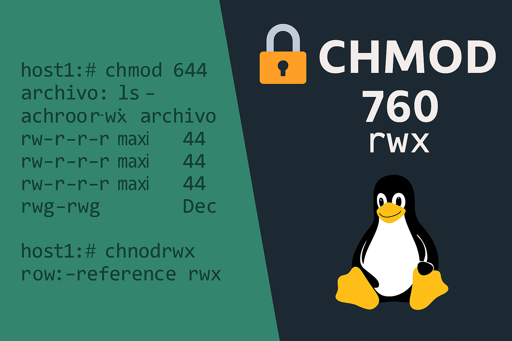
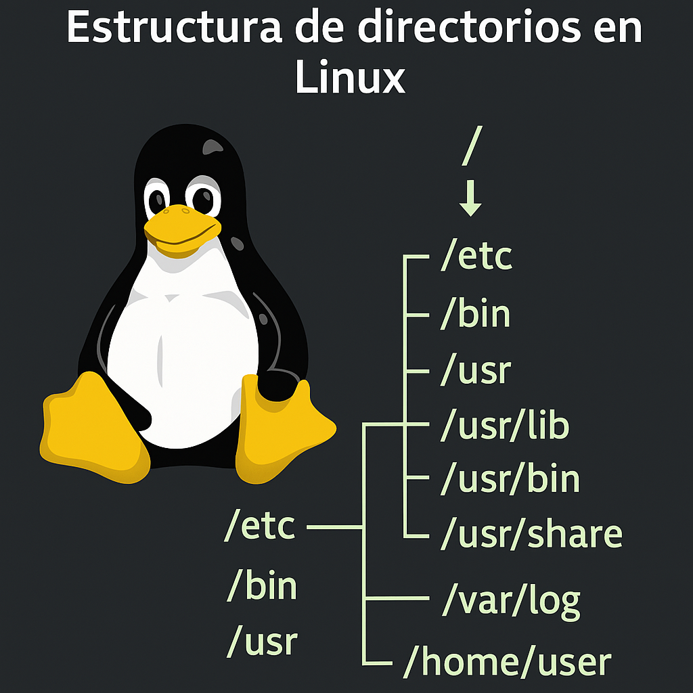

Guías, tutoriales e información sobre Linux, desde comandos básicos hasta configuraciones avanzadas.
Apunte con los comandos esenciales para moverte en Linux, organizados por categorías.
Guía para modificar y entender los permisos de archivos en Linux utilizando chmod, chown.
Recorrido por las carpetas más importantes del sistema Linux, explicando su propósito y contenido habitual.